NAVIGATION
TOP of Page
MAIN Page
HOME Page
PREV Page
NEXT Page
ON THIS PAGE
MAP
ABOUT
SHEPPARTON CITY
Shepparton
Shepparton Art
Shepparton Heritage
SPC Ardmona
RURAL TOWNS
Tallygaroopna
Congupna
Lemnos
Dookie
Major Plains
Kialla
Mooroopna
Tatura
RIVERINA AREAS
Albury-Wodonga
Federation Council
Berrigan Shire
North-West
Campaspe Shire
Moira Shire
Shepparton G.C.
Benalla R.C.
Indigo Shire
Silos & Waterways
|
MAP
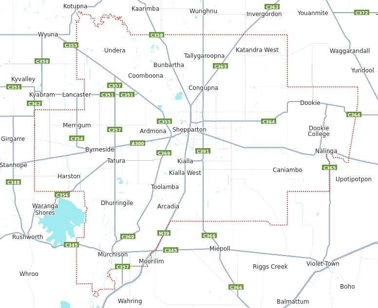
Map of The Greater City of Shepparton, VIC
ABOUT
On 18 November 1994, the Shire of Shepparton was abolished, and along with the City of
Shepparton, the Shire of Rodney and some neighbouring districts, was merged into the newly
created City of Greater Shepparton.
TOP
MAIN
HOME
PREV
NEXT
SHEPPARTON CITY
Shepparton, VIC with it's adjacent town of Mooroopna has a population of 53,841. it is an
agricultural and manufacturing centre, and the centre of the Goulburn Valley irrigation system, one
of the largest centres of irrigation in Australia. It is also a major regional service city and the seat
of local government and civic administration for the City of Greater Shepparton and a major centre
for infrastructure and civic services. Shepparton's main industries are agriculture and associated
manufacturing.
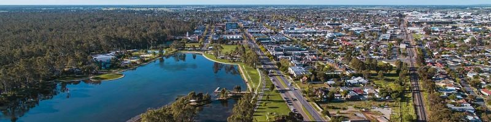
Shepparton, VIC
Princess Park in the centre of town has a large picnic area through which the Goulburn River
flows. The Maude Street Mall is the city's main shopping centre, while Wyndham Street is the main
civic and commercial street. Located off the Maude Street Mall is a 76 metre communications
tower, erected 1967–68, with an observation deck at 35 metres accessible via a 160 step stairway.
The observation deck offers views over the city and surrounding countryside.
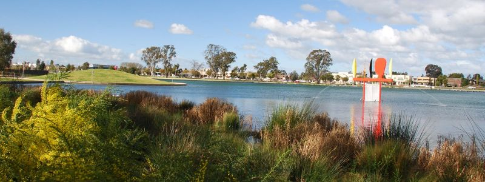
Princess Park in Shepparton, VIC
Link to Shepparton
Link to Shepparton
Link to Shepparton
Link to Shepparton
TOP
MAIN
HOME
PREV
NEXT
Shepparton Art Museum, affectionately known as SAM, boasts an impressive collection of
Australian historical and contemporary ceramics whilst also hosting a distinct program of
temporary exhibitions and participatory workshops. SAM is also home to the renowned Sam Jinks
sculpture “Woman and Child”.
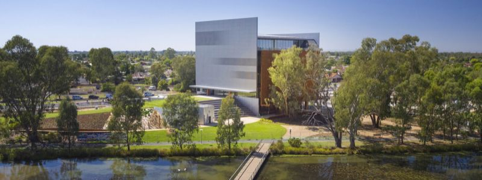
Shepparton Art Museum at 530 Wyndham Street, Shepparton, VIC
Link to SAM
Shepparton Heritage Centre Museum is closed for long awaited renovations. Expected to re-
open Tuesday 11th June 2024. The History Hub situated next door is OPEN as usual for contact
with volunteers, research or donation of items. Monday, Wednesday & Friday 9.00am to 1pm.
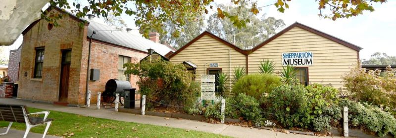
Shepparton Heritage Centre Museum at 154 Welsford Street, Shepparton VIC
Link to Heritage
SPC Ardmona is Australia's largest processor of canned fruits, having a production facility in
Andrew Fairley Avenue and a factory sales outlet at 197-205 Corio Street. Seasonal fruits, such as
peaches, pears and apricots are preserved into a variety of packaging.
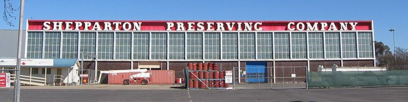
SPC Operations in Andrew Fairley Avenue, Shepparton, VIC
By Mattinbgn - Own work, CC BY-SA 3.0,
https://commons.wikimedia.org/w/index.php?curid=2585643
Link to SPC
Link to SPC
TOP
MAIN
HOME
PREV
NEXT
RURAL TOWNS
Tallygaroopna, VIC has a population of 264, with 579 living in the local district. It is located 17km
north of Shepparton and has a store, a motor garage, the memorial hall, a Presbyterian church, a
school (47 pupils, 2014), a golf course, tennis and bowling facilities and an oval. The trains no
longer stop at the town, and the silos were closed in 1987. The town was inundated with water in
the 2012 flood. The 120 years old hotel was flooded and two months later was burnt down.
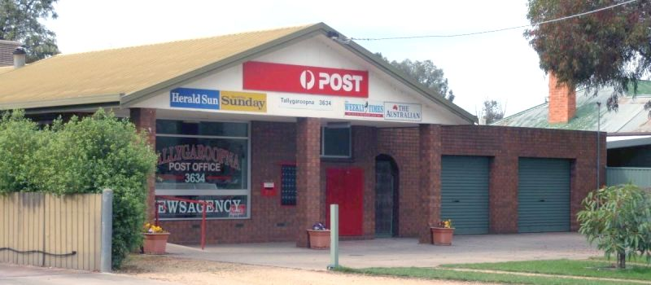
General Store at 4 Victoria Street, Tallygaroopna, VIC
Congupna, VIC has a population of 620 and by the name of Koongoopna was first established
about 8 km north of its present location. Congupna Post Office opened there on 1 December 1881,
was renamed Congupna Township around 1909 and closed in 1953. Congupna Road Post Office
opened on 17 October 1881 shortly after the railway station of the same name. These were both
renamed Congupna in 1968.
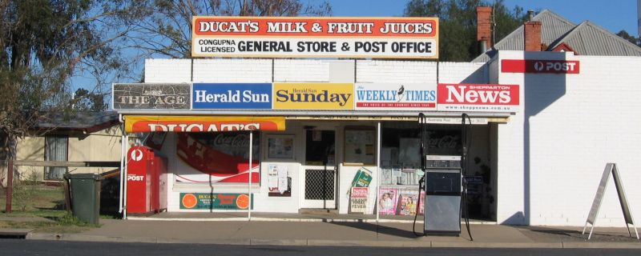
General Store on Katamatite-Shepparton Main Road, Congupna, VIC
By Mattinbgn - Own work, CC BY-SA 3.0,
https://commons.wikimedia.org/w/index.php?curid=4907927
TOP
MAIN
HOME
PREV
NEXT
Lemnos, VIC is on the eastern outskirts of Shepparton and has a population of 246. The locality
was established in 1927 as a soldier settlement area after the First World War. It was named after the Greek island of Lemnos, which was an
operational base for the Gallipoli campaign and to which wounded Australian soldiers were evacuated.
It has a state school, a general store with a post office agency, and a large farming community.
Lemnos is also home to a Campbell Soup Company factory. In 2020, Lemnos was the site of
Australia's only surgical mask factory, operated by Med-Con Pty Ltd.
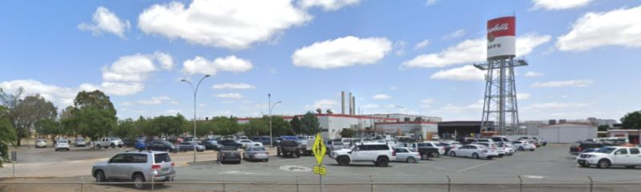
Campbell Soup Factory, 55 Lemnos North Road, Lemnos, VIC
Dookie is a farming community with a population of 333 and is an authentically original small
town. It is situated in a valley between Mount Major and Mount Saddleback. Dookie is five minutes
by car from Dookie College, jointly managed by the Goulburn Ovens Institute of TAFE and
the University of Melbourne since 2005.
Dookie has many sporting and community groups as well as the Dookie rail trail opened in 2012.
Take in the sights of the Dookie Flowering Gum art installation, and the interestingly upcycled art
on wheels in the Dookie Nomadic Silo’s. The Dookie Emporium boasts an eclectic mix of antiques,
furniture, collectibles and militaria, plus providing morning refreshments.
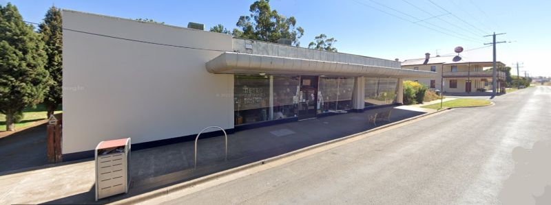
Dookie Emporium and Gladstone Hotel on Main Street / New Dooke Road, Dookie, VIC
Link to Dookie
Major Plains and Mount Major, VIC Major Plains is a locality situated to the south-east of
Dookie. The main east–west roads in the locality are Dookie-Devenish Road, Major Plains Road and
Gooroombat-Dookie College Road (Thomas Road), while the main north–south roads are Duggans
Road, Benalla Boundary Road (which divides the local government areas) and Roberts Road. Mount
Major is 381 metres high and hosts all the local television transmitting aerials.
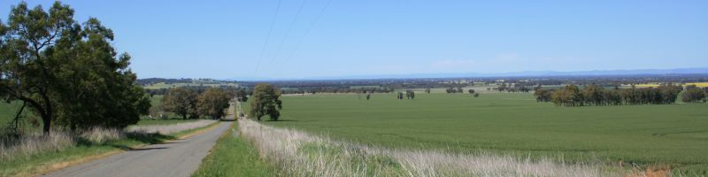
Major Plains from the Dookie-Devenish Road near Dookie, VIC
TOP
MAIN
HOME
PREV
NEXT
Kialla, VIC is a township within the City of Greater Shepparton LGA with the surrounding area
having a population of 6,800.
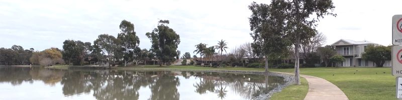
Kialla Lake, Kialla Lakes Drive, Kialla, VIC
Link to Kialla
The Museum of Vehicle Evolution (MOVE) is to be found at 7723 Goulburn Valley
Highway. MOVE displays motor cars, motorbikes, trucks, buses, and much more. Learn about the
legends of the road transport industry and their machines in the Kenworth Dealer Pavilion's
"Avenue of Legends." MOVE also includes; The Furphy Museum, The Farren Vintage Bicycle
Collection, The Dick Clayton Collection of gramophones, telephones, and radio, and the
extraordinary Loel Thomson Costume Collection.
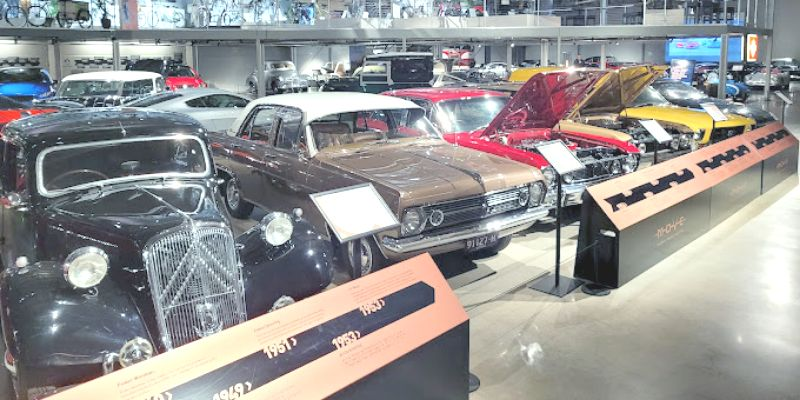
Museum of Vehicle Evolution, 7723 Goulburn Valley Highway, Kialla, VIC
Link to MOVE
The Australian Botanic Garden is at Botanic Gardens Avenue, Kialla. The garden designs depict the
story of change. The garden themes follow a timeline and are revealed to visitors as they walk
along the pathways. The site consists of native grassy bushland, wetlands, and a 7 hectare, 30
metre-high reclaimed landfill area with a lookout, adjacent to the Goulburn and Broken Rivers.
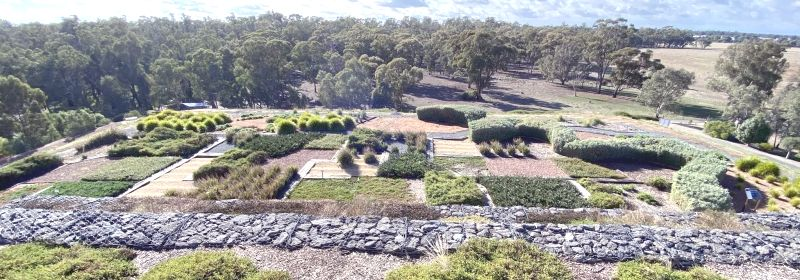
Botanic Gardens, Botanic Gardens Avenue, Kialla, VIC
Link to Gardens
TOP
MAIN
HOME
PREV
NEXT
Mooroopna, VIC features a bronze statue immortalising local legend Cyril ‘Jack’ Findlay, one of
Australia’s most celebrated Grand Prix motorcycle racers, as well as a substantial war memorial
featuring heritage imagery and distinct rotunda. The precinct comes to life after dark with the
illumination of the war memorial panels, tree lighting and colour changing water tower.
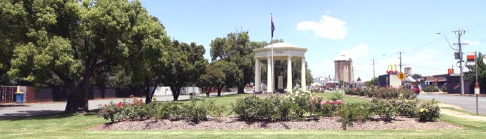
Jack Findlay Park, McClenna Street / Midland Highway, Mooroopna, VIC
Link to Mooroopna
Tatura, VIC has a population of 4,955. With a large corporate and manufacturing presence within
the town, Tatura is a major employer within the Goulburn Valley. Attractions include the Cussen
Park Wetlands, the Wartime Camps, and Irrigation Museum. Take a drive on the "History and
Heritage" touring route - a self guided tour itinerary with map and information.
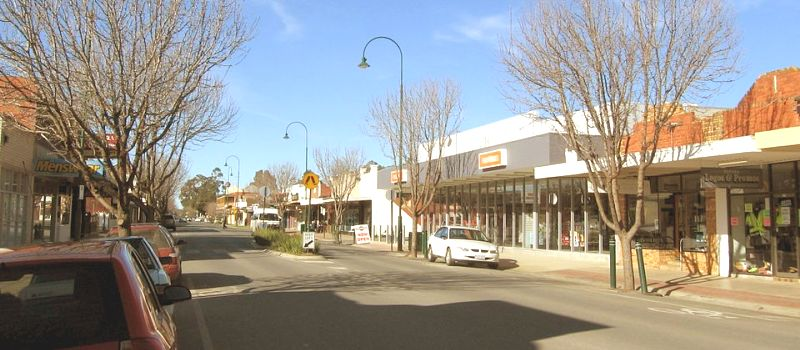
Tatura, VIC
By I, Mattinbgn, CC BY-SA 3.0,
https://commons.wikimedia.org/w/index.php?curid=2443478
Link to Tatura
Link to Tatura
Link to Tatura
TOP
MAIN
HOME
PREV
NEXT
Tatura Irrigation and Wartime Camps Museum on the corner of Hogan and Ross Streets displays
fascinating items donated from those who experienced life as internees and POWs in the region
during the World War II. During World War II, several internment camps were set up around Tatura
by the Australian government. Four of these were for "enemy alien" civilians, and three were for
prisoners of war including Germans, Italians and Japanese. Between 1940 and 1947, there were
10,000 to 13,000 people in the internment camps at different times.
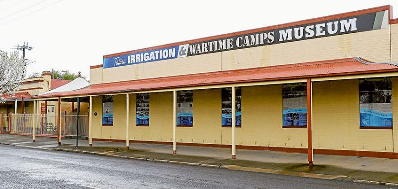
Tatura Irrigation and Wartime Camps Museum, Cnr Hogan & Ross Streets, VIC
Link to Museum
Link to Museum
Link to Museum
Link to Museum
Tatura Milk Factory at 236 Hogan Street now processes 80,000 tonnes of dairy products annually from local milk and
manufactures a wide range of dairy products for the global market with more than 60% of the total
production exported to Japan, Korea, Malaysia, Singapore, Indonesia, China, Philippines, Thailand,
Taiwan, Hong Kong and Europe.
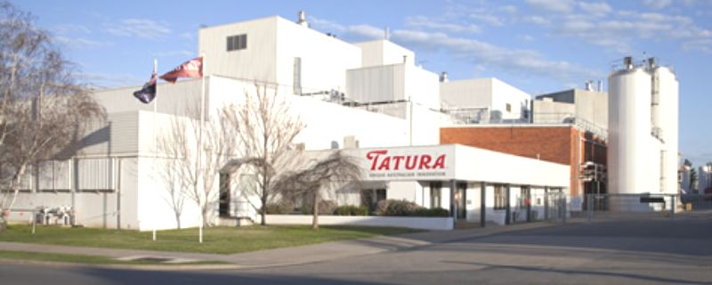
Tatura (Bega) Milk factory, 236 Hogan Street, Tatura, VIC
Link to Factory
TOP
MAIN
HOME
PREV
NEXT
|